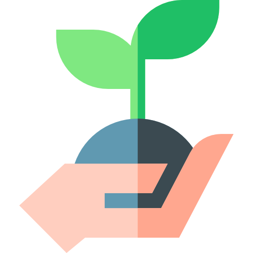
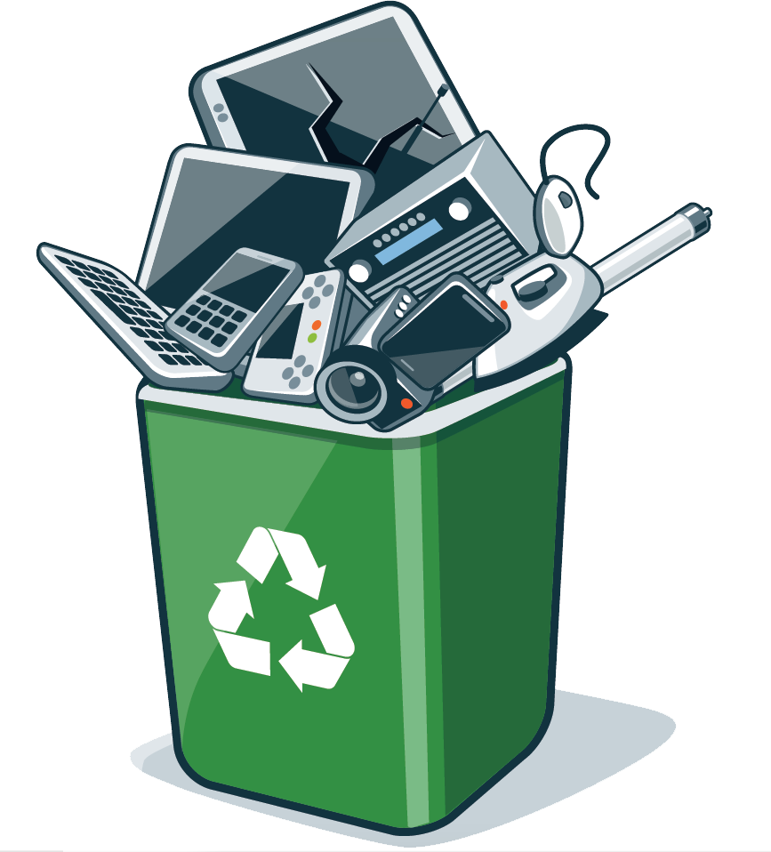

XôTech
Transforme o fim da vida útil em um novo começo. O guia definitivo para o descarte inteligente e sustentável de eletrônicos.
Descubra Onde DescartarPor sua definição, a sustentabilidade é um conjunto de práticas voltadas à preservação dos recursos naturais por meio da redução dos impactos direcionados a eles de forma contínua e responsável.
Um de seus pilares é a reciclagem, que consiste na identificação de resíduos sólidos aptos para a sua reutilização na produção de novos produtos.
No meio profissional, a sustentabilidade não é mais vista como uma responsabilidade ambiental ou medida de controle empresarial.
Atualmente, ela representa uma vantagem competitiva e financeira, sendo um fator importante para clientes e investidores, tornando-se um elemento essencial na criação de soluções para problemas ambientais, sociais e econômicos.

A reciclagem dos aparelhos eletrônicos funciona de forma semelhante a uma “mineração urbana”. Em que os equipamentos são desmontados manualmente para a retirada de peças perigosas, passados por trituradores industriais e por um processo de separação dos componentes que contém plásticos e minerais importantes.
Entretanto, nem todos precisam ser descartados. Existem também a reutilização de peças que ainda estão em boas condições para o reaproveitamento no conserto de outros aparelhos eletrônicos.
A reutilização de componentes ajuda a diminuir custos de fabricação e incentiva práticas mais sustentáveis dentro das empresas e da sociedade.

O descarte incorreto do lixo eletrônico ainda representa um grave problema ambiental e social. Em muitos casos, resíduos eletrônicos são enviados ilegalmente para países mais pobres, para ocorrer uma manipulação de baixa qualidade e sem proteções adequadas.
Além da queima de metais e outros componentes que ocasionam na liberação de substâncias tóxicas que contaminam o solo, a água e o ar.
Além disso, a exposição constante a esses materiais leva a danos sérios à saúde humana, podendo gerar problemas respiratórios, intoxicações e danos neurológicos.
Outro fator humano relacionado ao lixo eletrônico é o apego emocional. Hoje em dia, os aparelhos eletrônicos não servem apenas para realizar tarefas do dia a dia. Muitas vezes eles guardam as lembranças importantes de seus consumidores.
Gerando um apego que condiciona os eletrônicos a um armazenamento de longa data em gavetas, caixas ou armários, aumentando o acúmulo de lixo eletrônico dentro das residências. Este armazenamento é motivado pela crença da reutilização futura do objeto. Em outros casos, o indivíduo simplesmente não sabe onde descartar corretamente esses materiais e prefere deixá-los guardados.
Esse comportamento acaba dificultando o reaproveitamento de componentes conservados que poderiam ser reciclados e reutilizados na fabricação de novos produtos. Além disso, quanto maior o acúmulo, maior também será o risco de impossibilidade de reutilização por serem peças fora de época.
Outro ponto importante é o consumismo relacionado à tecnologia. Atualmente, a sociedade incentiva muito a compra de aparelhos novos. As empresas lançam novos aparelhos e dispositivos, no intuito de criar a sensação de desatualização constante, contribuindo para um consumo excessivo.

Facilitamos o processo de descarte. Agende uma coleta gratuita e contribua para um planeta mais limpo.
Veja Mais Sobre!